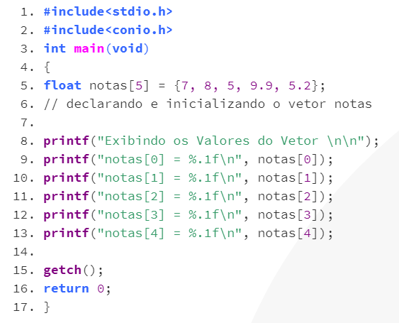

Vetores são variáveis compostas homogêneas
Variável é um elemento que armazena um valor pertencente a um tipo , pode ser unitária ou composta. Unitária é única e composta é um conjunto de valores, que podem ser homogêneos - mesmo tipo - ou heterogêneos - tipos diferentes. As compostas homogêneas podem ser chamadas de vetores, compostas por uma estrutura de dados unidimensional.
A sintaxe da definição de um vetor é a seguinte :
tipo identificador = vator [LI .. LF] de tipo primitivo;
Em que LI é o limite inicial do vetor e LF é o limite final. O numero de valores dentro do vetor pode ser calculado como LF-LI+1.
Por exemplo, um vetor V com 40 valores inteiros:
tipo V = vetor[1..40] de inteiros;
Os vetores tbm são conhecidos como arrays, e o preenchimento dele pode ser feito indicando um valor segundo sua posição (índice), ou seja, por indexação:
V: VA,VB,VC;
VA[1] = 5;
VA[2] = 8;
VA[3] = 11;
Na linguagem C o uso de vetor pode ser feito por meio de definições com array (sintaxe):
Tipo nome_do_vetor[quantidade de itens];
Exemplo:
int V[5] = {1,2,3,4,5} //inicializando todos os elementos
int V[5] = {1,2,3} //inicializando alguns elementos , que é equivalente a {1,2,3,0,0}
int V[] = {1,2,3} //inicializando vetor sem especificar quantidade de elementos
Exemplo de programa em C:
A carga de um vetor pode ser feita por índice, de forma individual e pode-se tbm encontrar o valor dentro de um vetor, por exemplo A[1] indica o primeiro elemento do vator A, assim como A[2] é o segundo. É possível também que uma variavel receba o valor de elemento de um vetor:
x = A[3]; // a variavel x recebe o valor do terceiro elemento do vetor A
Pode-se tambem realizar operações aritméticas com vetores :
A[4] = 2*A[4];
Para leitura de vetores tbm se usa índice como referência, assim para fazer a leitura do 4 elemento do vetor Z deve usar Z[4].
Os vetores são unidimensionais mas existem os bidimensionais conhecidos como tabelas ou matrizes. Ela é composta de 2 índices que representam linhas e colunas.
A declaração de matrizes pode ser feita pela seguinte sintaxe:
tipo identificador = matriz[LI1..LF2,LI2..LF2] de tipo primitivo;
Em que LI1,LF1,LI2,LF2 são limites dos intervalos de variação dos índices da variável, em que cada par está associado a um índice da matriz.
Exemplos de declaração de matriz:
número de elementos da matrizes = (LF1-LI1+1)*(LF2-LI2+1)*...*(LFn-LIn+1)
tipo M = matrizes[1..4,1..4] de inteiros;
Na linguagem de programação C podemos usar a seguinte sintaxe:
tipo identificador[linhas][colunas]
exemplo:
float M[4][2];
tipo M = matrizes[1..4,1..2] de reais;
M: MAT;
MAT[1,1] = 1;//atribue o valor 1 para o elemento da primeira linha e primeira coluna
MAT[1,2] = 3;//atribue o valor 3 para o elemento da primeira linha e segunda coluna
As matrizes podem ser carregadas manualmente através da inserção de valor para cada elemento:
int m[3][3] = {10,20,30,40,50,60,70,80,90};
Onde
m[0][0] = 10; m[0][1] = 20; m[0][2] = 30; m[1][0] = 40; m[1][1] = 50; m[1][2] = 60; m[2][0] = 70; m[2][1] = 80; m[2][2] = 90;